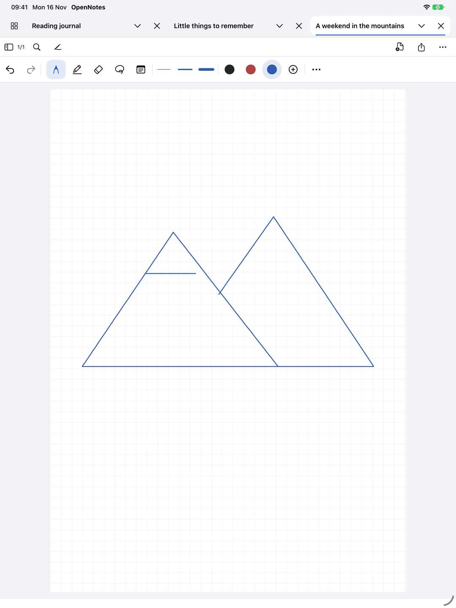
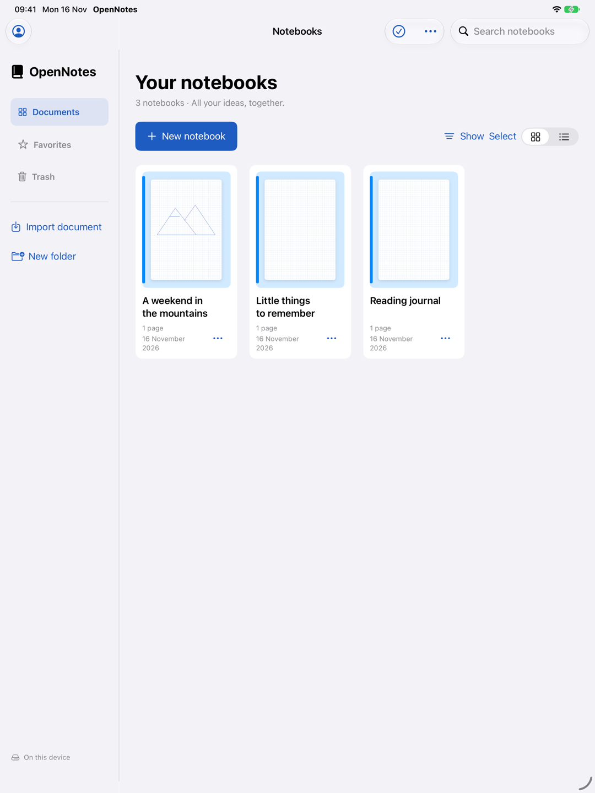
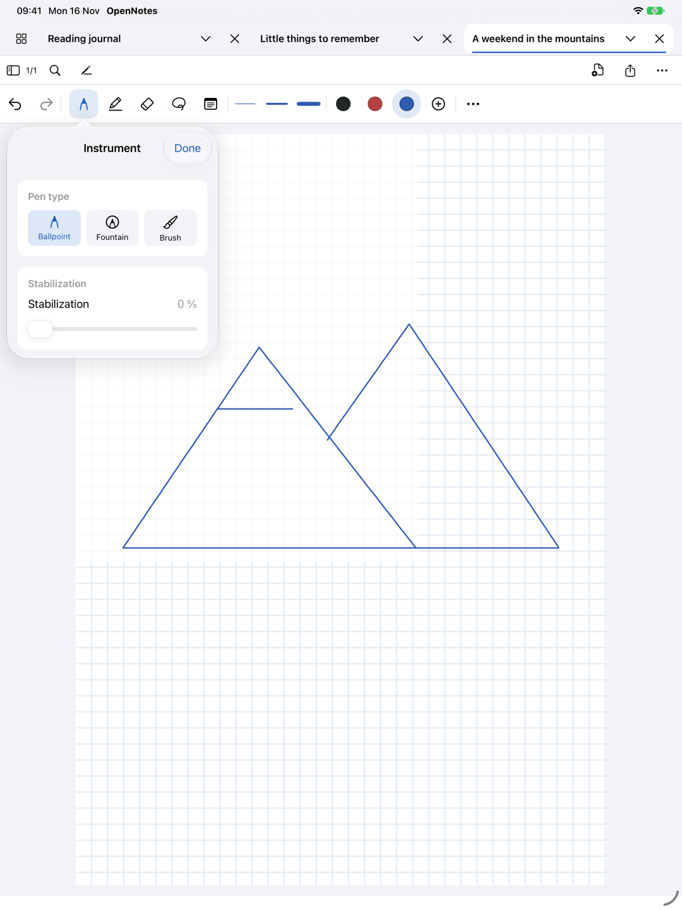
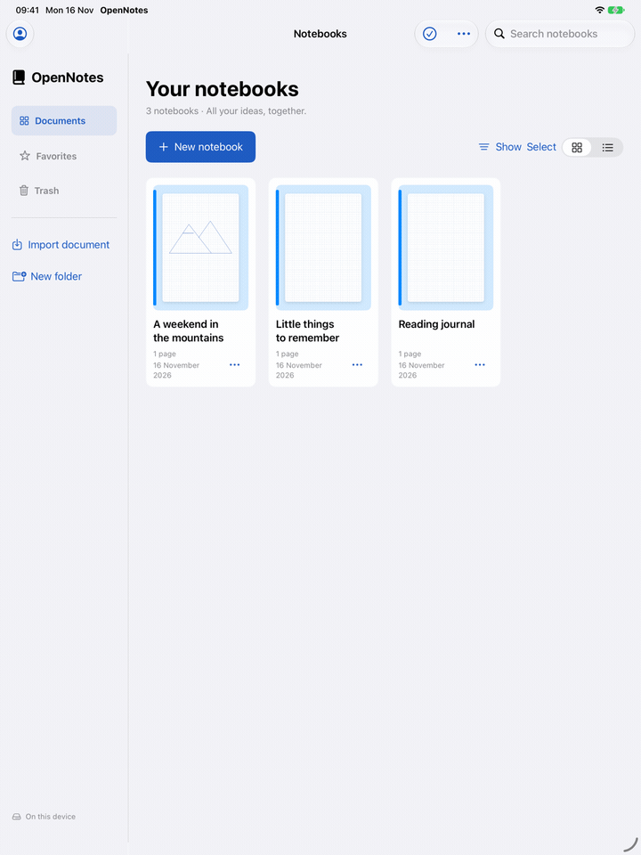

A pen that feels like yours.
Ballpoint, fountain or brush. Tune the color, width and feel. Sketch a shape, erase a detail, or move a whole thought with the lasso.
For the lecture, the next project, the thought you don’t want to lose. Handwriting, PDFs and everyday notes, together in one quiet place.
Made for iPad and iPhone. Yours to use, yours to explore.
Public preview · Build 36 · iOS 16+
Unsigned IPA · Your own signing is required


A little notebook.
A lot of possibilities.
A few useful tools, close at hand. Bring a document, start a fresh page, or pick up where you left off.
Ballpoint, fountain or brush. Tune the color, width and feel. Sketch a shape, erase a detail, or move a whole thought with the lasso.
Folders, favorites and open notebook tabs. Add PDFs, images, text and sticky notes to your pages.
Start without an account. Export a PDF to share, or a native .opennote backup to keep editing. Your notebooks have a way out.


From your library to the page, then a pen of your own. A short slideshow of real simulator captures.

Synthetic notes · Build 36 · Capture details. A screenshot slideshow, not a drawing-speed demonstration.
Writing, PDF annotation, notebook tabs and editable backups are here. This public preview brings the current app together in one release, with more work ahead on real-device validation.
Read the build 36 release notesSystem frameworks. A checked-in Xcode project. No package installation or backend required for local use.
Start developingClone the repository and open OpenNotes.xcodeproj.
Select the OpenNotes scheme and an installed iPad or iPhone simulator. Press Run.
Follow the contributor guide, run the affected tests and share a focused pull request.